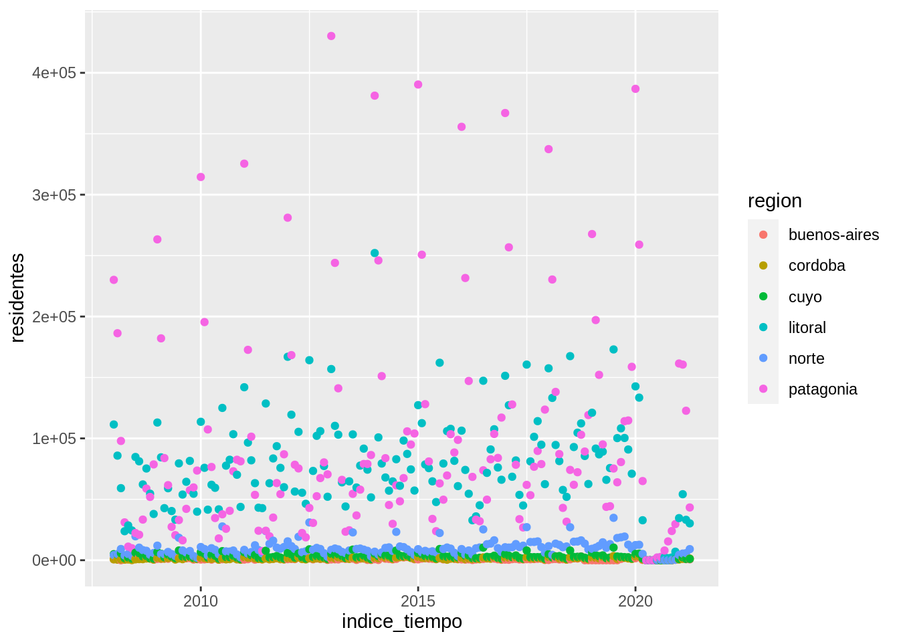

6.4 Otras geometrías
Este gráfico posiblemente no sea muy adecuado si queremos visualizar la evolución de una variable a lo largo del tiempo, necesitamos cambiar la geometría a lineas usando geom_line()
ggplot(data = turistas_destinos, mapping = aes(x = indice_tiempo, y = turistas)) +
geom_line(aes(color = region_destino))
6.4 Otras geometrías
Este gráfico posiblemente no sea muy adecuado si queremos visualizar la evolución de una variable a lo largo del tiempo, necesitamos cambiar la geometría a lineas usando geom_line()
ggplot(data = turistas_destinos, mapping = aes(x = indice_tiempo, y = turistas)) +
geom_line(aes(color = region_destino))
>>>>>>> dplyr-1Por suerte las funciones geom_*() tienen más o menos nombres amigables.
Pero el gráfico sigue teniendo problemas, al parecer dibujó una línea por continente.
Si estuviéramos dibujando este gráfico con lápiz y papel muy posiblemente hubiéramos identificado los puntos que corresponden a cada país y los hubiéramos “unido con líneas”, necesitamos que ggplot2 haga esto.
¿Cómo le indicamos que puntos corresponde a cada país?
Necesitamos que los agrupe por la variable pais (¡qué bueno que tenemos toda esa información en nuestra base de datos!).
ggplot(data = paises, mapping = aes(x = anio, y = esperanza_de_vida)) +
geom_line(aes(color = continente, group = pais))
ggplot(data = paises, mapping = aes(x = anio, y = esperanza_de_vida)) +
geom_line(aes(color = continente, group = pais))Usamos el argumento group = y de nuevo, lo incluimos dentro de la función aes() para indicarle a ggplot2 que busque la variable pais dentro del data.frame que estamos usando.
Y ahora si, conseguimos el gráfico que estamos buscando.
Segundo desafío
Cuando mencionamos que ggplot2 construye gráficos por capas, lo decíamos en serio! Hasta ahora tenemos dos capas: el área del gráfico y una geometría (las líneas).
- Sumá una tercera capa para visualizar puntos además de las líneas.
- ¿Porqué los puntos ahora no siguen los colores de los continentes?
- ¿Qué cambio podrías hacer para que los puntos también tengan color según el continente? ======= ======= >>>>>>> Stashed changes
- Sumá una tercera capa para visualizar puntos además de las líneas.
- ¿Porqué los puntos ahora no siguen los colores de las regiones?
- ¿Qué cambio podrías hacer para que los puntos también tengan color según la región? <<<<<<< Updated upstream >>>>>>> Stashed changes ======= >>>>>>> Stashed changes
colorocolourmodifica el color de líneas y puntos
<<<<<<< Updated upstream
<<<<<<< Updated upstream
fillmodifica el color del área de un elemento, por ejemplo el relleno de un puntolinetypemodifica el tipo de línea (punteada, continua, con guiones, etc.)pchmodifica el tamaño del punto
=======
fillmodifica el color interno de un elemento, por ejemplo el relleno de una barralinetypemodifica el tipo de línea (punteada, continua, con guiones, etc…)
>>>>>>> Stashed changes
=======
fillmodifica el color interno de un elemento, por ejemplo el relleno de una barralinetypemodifica el tipo de línea (punteada, continua, con guiones, etc…)
>>>>>>> Stashed changes
sizemodifica el tamaño de los elementos (por ejemplo el tamaño de puntos o el grosor de líneas)alphamodifica la transparencia de los elementos (1 = opaco, 0 = transparente)shapemodifica el tipo de punto (círculos, cuadrados, triángulos, etc.)
6.4 Otras geometrías
Este gráfico posiblemente no sea muy adecuado si queremos visualizar la evolución de una variable a lo largo del tiempo.
Si bien se pueden identificar a qué región correponde cada punto, es muy difícil seguir la evolución de uno en particular; especialmente en la Patagonia, donde hay mucha distancia vertical entre los puntos.
Lo más natural es cambiar la geometría a lineas usando geom_line()
ggplot(data = parques, mapping = aes(x = indice_tiempo, y = residentes)) +
geom_line(aes(color = region))
Por suerte las funciones geom_*() tienen más o menos nombres amigables.
Y ahora si, conseguimos el gráfico que estamos buscando. Las líneas unen puntos consecutivos y permiten que el ojo siga la evolución de cada región. La diferencia entre temporada alta y temporada baja en Patagonia (la estacionalidad) salta inmediatamente.
Segundo desafío
Hasta ahora tenemos dos capas: el área del gráfico y una única geometría (las líneas).
Acá surge una característica importante de las capas: pueden tener apariencia independiente si solo mapeamos el color en la capa de las líneas y no en la capa de los puntos.
Al mismo tiempo, si quisiéramos que todas las capas tenga la misma apariencia podemos incluir el argumento color =en la función global ggpplot() o repetirlo en cada capa.
# ggplot(paises, aes(anio, esperanza_de_vida)) +
# geom_line(aes(color = continente, group = pais)) +
# geom_point()# ggplot(paises, aes(anio, esperanza_de_vida)) +
# geom_line(aes(color = continente, group = pais)) +
# geom_point()Si te preguntabas a donde fueron a parar el data =, el mapping = y los nombres de los argumentos adentro de la función aes(), x = e y =, resulta que estamos aprovechando que tanto ggplot2 como nosotros ahora sabemos en que orden recibe la información cada función.
Siempre el primer elemento que le pasemos o indiquemos a la función ggplot() será el data.frame.
Es la diferencia entre esto
ggplot(parques, aes(indice_tiempo, residentes)) +
geom_line(aes(color = region)) +
geom_point()
y esto.
ggplot(parques, aes(indice_tiempo, residentes, color = region)) +
geom_line() +
geom_point()
Si te preguntás a donde fueron a parar el data =, el mapping = y los nombres de los argumentos adentro de la función aes(), x = e y =, resulta que estamos aprovechando que tanto ggplot2 como nosotros ahora sabemos en que orden recibe la información cada función.
Siempre el primer elemento que le pases o indiquemos a la función ggplot() será el data frame y el segundo será el aes().
Algunos argumentos para cambiar la apariencia de las geometrías son:
El mapeo entre una variable y un parámetro de geometría se hace a través de una escala.
<<<<<<< Updated upstream
<<<<<<< Updated upstream
La escala de colores es lo que define, por ejemplo, que los puntos donde la variable continente toma el valor "África" van a tener el color rosa (●), donde toma el valor "Américas", mostaza (●), etc…
Modificar elementos utilizando un valor único
Es posible que en algún momento necesites cambiar la apariencia de los elementos o geometrías independientemente de las variables de tu data.frame.
Por ejemplo podrías querer que todos los puntos sean de un único color: rojos.
En este caso geom_point(aes(color = "red")) no va a funcionar -ojo que los colores van en inglés-.
Lo que ese código dice es que mapee el parámetro geométrico “color” a una variable que contiene el valor "red" para todas las filas.
El mapeo se hace a través de la escala, que va a asignarle un valor (rosa ●) a los puntos correspondientes al valor "red".
Ahora que no nos interesa mapear el color a una variable, podemos mover ese argumento afuera de la función aes(): geom_point(color = "red").
region toma el valor "patagonia" van a tener el color rosa (●), donde toma el valor córdoba", mostaza (●), etc…
Modificar elementos utilizando un valor único
Es posible que en algún momento necesites cambiar la apariencia de los elementos o geometrías independientemente de las variables de tu data frame.
Por ejemplo podrías querer que todos los puntos sean de un único color: rojos.
En este caso geom_point(aes(color = "red")) no va a funcionar -ojo que los colores van en inglés-.
Lo que ese código hace es mapear el parámetro geométrico “color” a una variable que contiene el valor "red" para todas las filas.
El mapeo se hace a través de la escala, que va a asignarle un valor (rosa ●) a los puntos correspondientes al valor "red".
Como en este caso no te interesa mapear el color a una variable, tenés que mover ese argumento afuera de la función aes(): geom_point(color = "red").